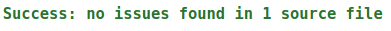
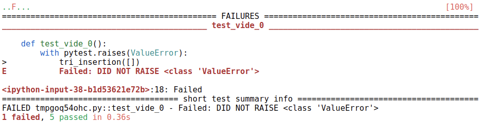

Mise au point des programmes - gestion des bugs⚓︎
Introduction: les bugs en informatique⚓︎
Un bug est une toute petite erreur qui peut avoir des conséquences catastrophiques. La gestion des bugs est un des points fondamentaux de l'informatique.
A voir
Voir l'introduction (ou lien de secours Youtube) de l'informaticien Gérard Berry à ce sujet.
Eviter les bugs⚓︎
Rien ne permet vraiment de garantir qu’un programme ne présente aucun bug. Toutefois, certains principes permettent de limiter les risques.
Commenter le code⚓︎
Un module, un package, une fonction ou une classe doit être documenté. Cette documentation ou spécification sera disponible lorsqu'on utilisera la fonction help de python.
Le moyen le plus simple pour documenter le code est l'utilisation d'une docstring.
Définition
Une docstring est une chaîne de caractères située entre une paire de triple double quotes """ """, au début de l'entité qu'elle renseigne.
Dans le cas d'une fonction, on y trouve les conditions portant sur les entrées ou préconditions ainsi que ce qu'elle renvoie ou postcondition.
Exemple
1 2 3 4 5 6 7 8 9 10 | |
1 | |
1 2 3 4 5 | |
Le typage des données⚓︎
On reprend la fonction max_tab précédente avec l'appel:
1 | |
1 2 3 4 5 6 7 8 9 10 11 12 13 14 15 16 17 | |
On obtient une erreur de type TypeError. Il s'agit d'une erreur très courante.
Certains langages vérifient avant l'exécution les problèmes de typage. De par sa nature, Python ne le fait pas (du moins pas directement). Cependant, depuis la version 3.5, on peut annoter les programmes de manière à bien préciser les types des variables utilisées ainsi que celui du résultat renvoyé.
D'un point de vue syntaxique, il suffit de rajouter le type précédé de:
:juste après le nom du paramètre ou de la variable;->si c'est la valeur renvoyée par la fonction.
1 2 3 4 5 6 7 8 9 10 | |
1 | |
1 2 3 4 5 | |
Le module typing de la bibliothèque standard permet d'aller encore plus loin dans l'annotation en précisant le type d'objet présent dans le tableau t.
1 2 3 4 5 6 7 8 9 10 11 12 13 | |
1 | |
1 2 3 4 5 | |
Remarques
- Le type du tableau est ici List avec un 'l' majuscule;
- On a modifié la spécification de la fonction, notamment sa précondition, en précisant qu'on travaillait avec un tableau d'entiers.
Hors programme
On peut aller encore plus loin (non exigible en terminale) en faisant une vérification des types avec un
outil externe mypy.
Utilisation: on copie la fonction précédente dans le fichier max_tab.py par exemple et on exécute la
commande ci-dessous.
1 | |

Les tests⚓︎
On a vu en 1re qu'une bonne pratique de développement consistait à écrire des procédures de tests suffisamment exhaustifs pour couvrir les cas normaux d'utilisation notamment aux limites ainsi que les cas anormaux.
On s'intéresse ici aux tests unitaires, dont l'objectif est de tester indépendamment chaque fonction. il existe plusieurs outils permettant de réaliser des tests unitaires. On en utilisera deux principalement.
ATTENTION - Rappel
Un test ne garantit jamais la correction d’un programme. Une réussite du test n’est pas significative, alors qu'un échec établit de manière certaine la présence d’un bug.
Les assertions⚓︎
Une assertion échoue si l'expression booléenne qui suit le mot clé assert est fausse. L'exception AssertionError est alors levée. Si elle est vraie, l'exécution continue.
Exemples
1 2 3 4 5 6 7 8 9 10 11 12 | |
1 2 3 4 5 | |
Remarque
On peut utiliser également assert au sein du code afin de vérifier les préconditions et postconditions.
Le module pytest⚓︎
Le module pytest permet de faire des tests plus complets et plus explicites. Dans Jupyter Notebook on exécute d'abord la cellule ci-dessous, puis on écrit ses fonctions de tests qui doivent commencer par test_.
1 2 | |
1 2 3 4 5 6 7 8 9 10 11 12 13 14 15 16 17 18 19 20 21 22 23 24 25 26 27 28 29 30 31 32 | |

Quand le bug est là⚓︎
Quand le bug survient, il faut alors :
- savoir mettre en évidence le bug et le reproduire;
- comprendre la cause du bug;
- corriger le bug.
C’est ce qu’on appelle la mise au point, ou le débuggage. Parmi les erreurs classiques, on trouve notamment:
- division par zero :
ZeroDivisionError - accès hors des bornes d’une liste :
IndexError - erreur de nom de variable :
NameError - erreur de nom de méthode ou d’attribut :
AttributeError - appel récursif trop profond :
RecursionError - modification d’un objet non mutable :
TypeError